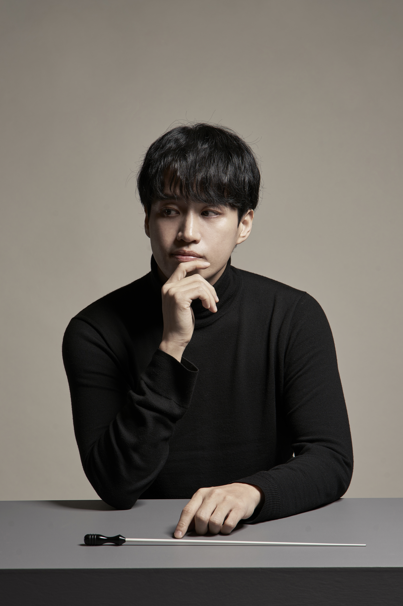

Breathing Tradition
국악이 누구나 즐기는
국악이 누구나 즐기는
음악이 되는 세상
대중이 공연 관람자 또는 취미 연주자로서 다양하게 접근할 수 있는 서양의 클래식이나 밴드 음악과 달리, 국악은 국공립 악단과 같은 제도적 틀 속에서만 성장해 왔습니다.
전문 연주자가 아닌 일반 대중에게는 국악 공연을 관람할 동기도 부족할 뿐더러, 취미로 즐기기도 어려운 상황입니다.
이에 비록 아마추어일지라도 대학생으로부터 시작해 대중이 만들고 즐기는 국악, 대중이 주도하는 국악의 새로운 흐름을 제시하고자 합니다.

지휘자 소개
장태평
작곡가, 지휘자
- 국립국악원 창작악단 <청춘, 청어람> 신진 지휘자 선정
- 제11회 ARKO한국창작음악제 국악부문 선정
- 국악관현악 '춤꽃', '처용', 가야금협주곡 '달꽃', '바리'
- 서울시극단 '퉁소소리', 창작연희극 '로미오&줄리엣'
- 경기시나위오케스트라 부지휘자 역임
- 現) 한국예술종합학교 전통예술원 출강
연합 대표 소개
장진형
대표, 악장
2022년
- 고려대학교 정치외교학과 입학
- 고려대학교 국악연구회 해금 파트장
2025년
- 서울국악동아리연합 총무
- 고려대학교 국악연구회 악장 겸 타악 파트장 (1학기)
- 고려대학교 국악연구회 타악 파트장 겸 학술부장 (2학기)